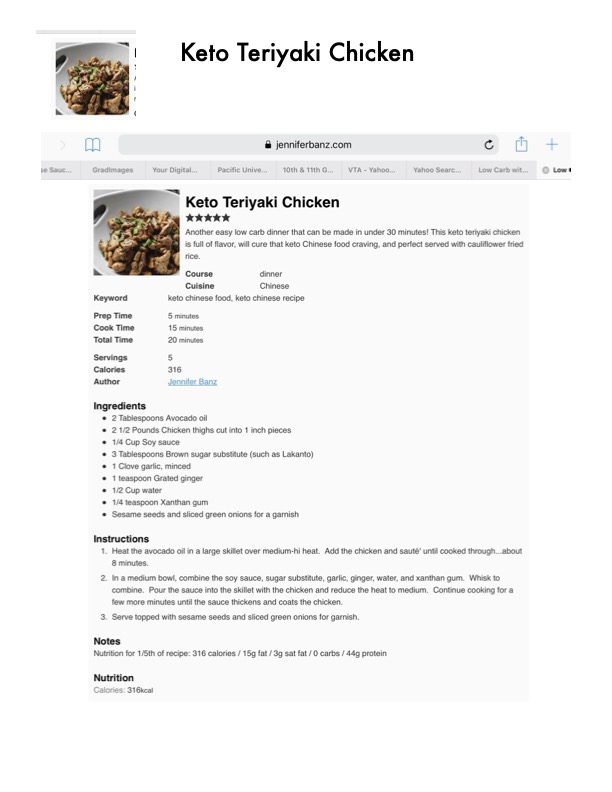

Keto Teriyaki Chicken

Original cookbook page 11
Another easy low carb dinner that can be made in under 30 minutes! This keto teriyaki chicken is full of flavor, will cure that keto Chinese food craving, and is perfect served with cauliflower fried rice.
Prep: 5 minutes • Cook: 15 minutes • Total: 20 minutes
Ingredients
- 2 tablespoons avocado oil
- 2 1/2 pounds chicken thighs, cut into 1 inch pieces
- 1/4 cup soy sauce
- 3 tablespoons brown sugar substitute (such as Lakanto)
- 1 clove garlic, minced
- 1 teaspoon grated ginger
- 1/2 cup water
- 1/4 teaspoon xanthan gum
- Sesame seeds and sliced green onions for garnish
Instructions
- Heat the avocado oil in a large skillet over medium-high heat. Add the chicken and sauté until cooked through, about 8 minutes.
- In a medium bowl, combine the soy sauce, sugar substitute, garlic, ginger, water, and xanthan gum. Whisk to combine. Pour the sauce into the skillet with the chicken and reduce the heat to medium.
- Continue cooking for a few more minutes until the sauce thickens and coats the chicken.
- Serve topped with sesame seeds and sliced green onions for garnish.
Recipe #11 from collection